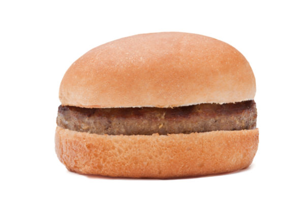
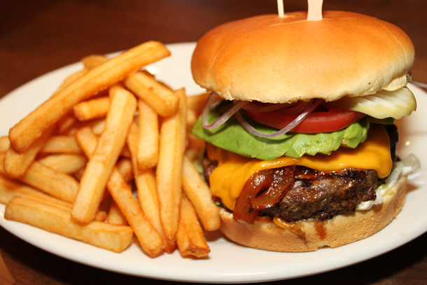

History of the Burger
For a full indepth history see one of the following sources:
Early Times
Some people claim the burger started in the 1200's with the armies of Genghis Kahn where solides would store and tenderize raw meat under the saddle of their horse.
Imagine chowing down one something like this after riding for weeks upon weeks!
More Recently
Oscar Weber Bilby in 1891 began serving chopped meat between a bun (instead of slices of bread which also existed)

Modern Day
As our Ingrediants pages lists, burger technology has come a long way since the humble beginings of raw, rancid, sweaty saddle meat
of the 1200's as well as the plain, tasteless sandwiches of the late 1800's.

French Fries in America were made the common side dish of hamburgers and cola by White Castle and McDonalds in the early 1900's
